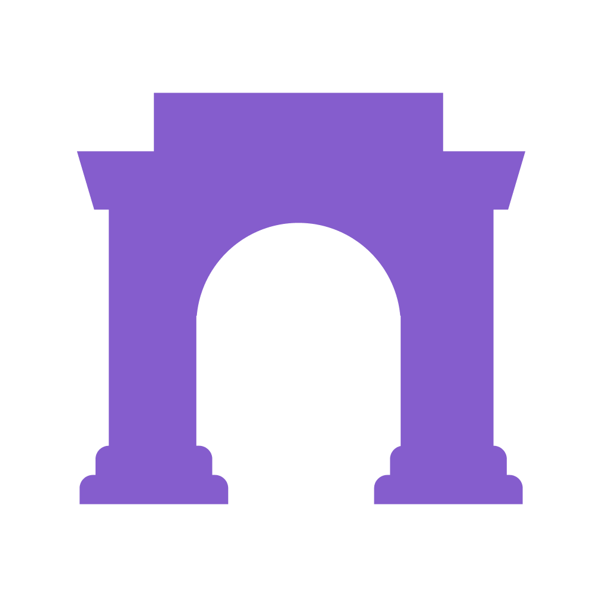
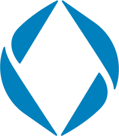
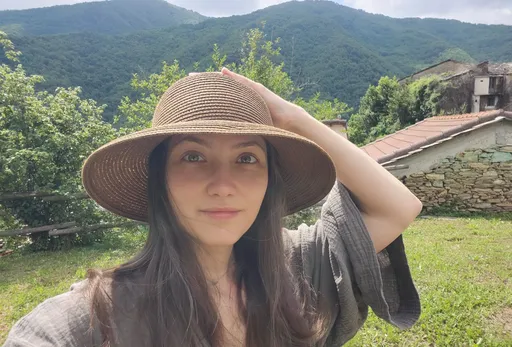

🖖 an explorer & critical optimist 🖖
♟️ sometimes i do strategy ♟️
🔊 sometimes i do comms & marketing 🔊
🌀 most of the time, i enjoy life and think about stuff 🌀

my full name is maria-luiza cluve, but friends call me lu or mary-lou.
i’m a freelance communication consultant who thrives by blending strategic thinking with social awareness to solve creative and communication challenges.
i’m also a good comms pm.i do pretty well in english and romanian, can speak and understand french, spanish, italian, and can survive in german.
some of the comms and A/V projects i managed: you deserve to be surprised, freeway360, gelatelli stop the drama, less talk, more ice cream, fresh out the oven, lidl kitchen 2.0, deluxe xmas
some of the branding projects i managed: freshful, fashion days, mangosteen, shopmania, brio, pant hoot, merchant pro, kindity
most of the time i’m chill and cheerful, have a very curious disposition, enjoy discovery and understanding new things.
love nature, music and dancing.

